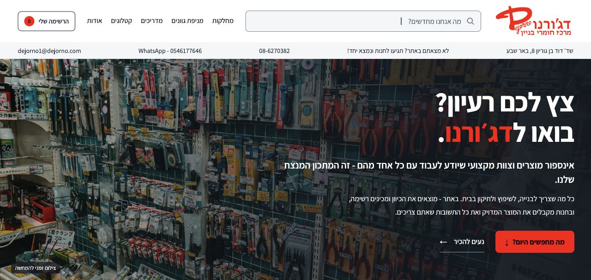
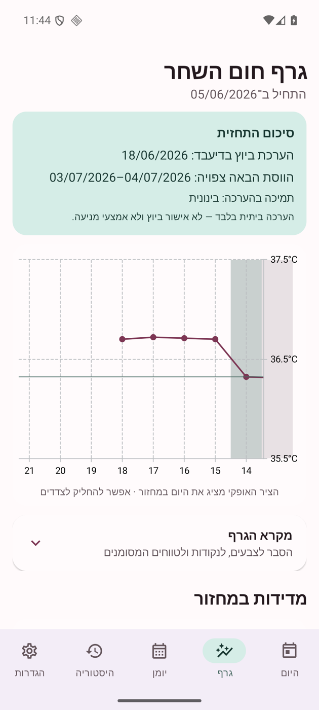
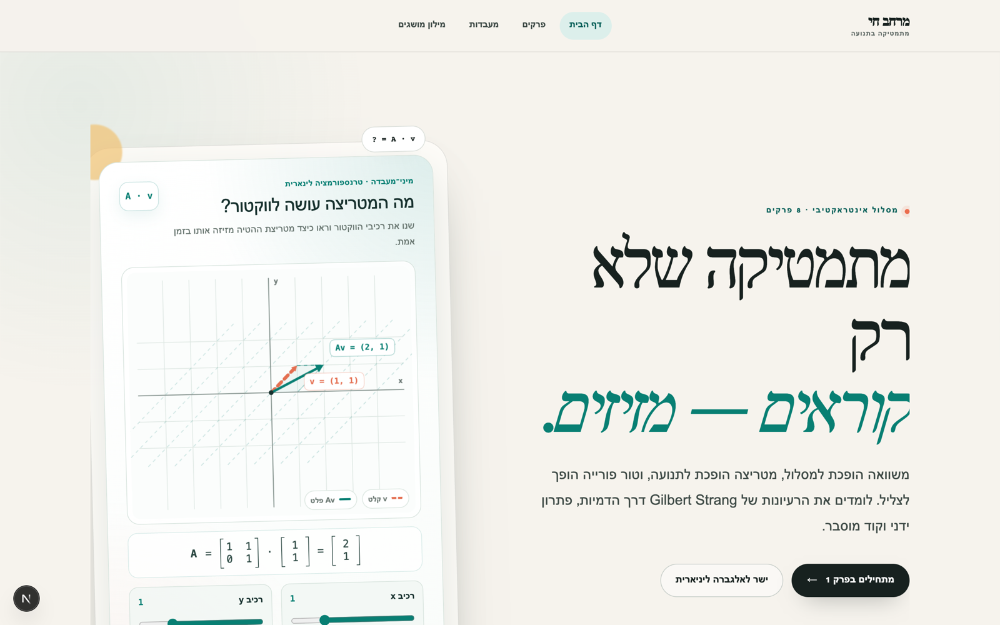
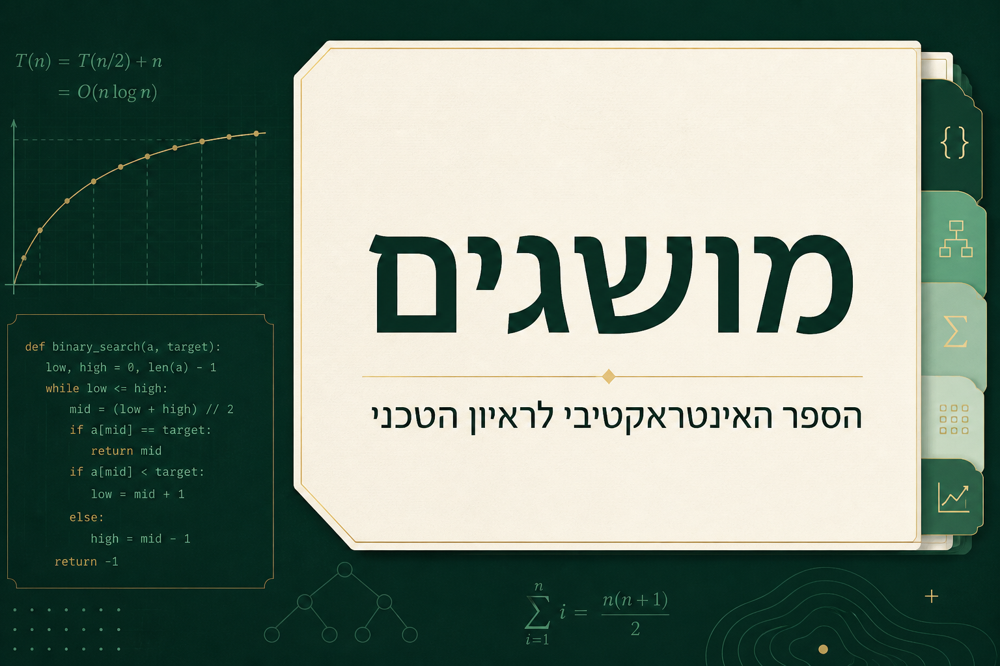

DE-LUהמחשה חזותית
מדעי הנתונים
לחזות את היום הבא
DE-LU · Electricity Price Forecasting
חיזוי הסתברותי למחירי החשמל בגרמניה–לוקסמבורג. משאלת החיזוי, דרך השוואת מודלים ועד לדוח מחקר ודמו נגיש.
אני מחבר בין מחקר, סטטיסטיקה ופיתוח תוכנה —
כדי להבין לעומק, לבנות כלים ולהפוך ידע למשהו שימושי.
הדרך שלי התחילה בפסיכוביולוגיה ובמחקר במדעי המוח. משם המשכתי לסטטיסטיקה, עיבוד אותות ומדעי הנתונים — ולבניית כלים שאנשים יכולים להשתמש בהם.
אני בעל תואר שני במדעי הרפואה עם עבודת גמר מאוניברסיטת בן־גוריון, ובוגר הכשרת Data Science בטכניון. בעבודה שלי אני נע בין תכנון ניסוי, ניתוח נתונים וכתיבת קוד, עם דגש על בחינה שיטתית של התוצאות והסבר ברור של המשמעות שלהן.
אני אוהב לפרק בעיה מורכבת לחלקים שאפשר להבין ולבדוק. לפעמים התוצאה היא מודל חיזוי, לפעמים אפליקציה — ולפעמים המחשה שעוזרת למישהו להבין רעיון חדש.
מחקר, מודלים ומוצרים.
כל פרויקט הוא דרך אחרת לפתור שאלה.
DE-LU · Electricity Price Forecasting
חיזוי הסתברותי למחירי החשמל בגרמניה–לוקסמבורג. משאלת החיזוי, דרך השוואת מודלים ועד לדוח מחקר ודמו נגיש.
SEM · Mediation Analysis
מודלים מבניים וניתוח תיווך במחקר על טראומה ובריאות הנפש. שותפות בפרסום בכתב העת World Psychiatry.

Dejorno · From an Idea to a Store Visit
אתר וכלי תכנון לעסק המשפחתי בתחום הבנייה והשיפוץ בבאר שבע. קטלוגים, מדריכי עשייה ומניפות גוונים מתחברים לרשימה אישית לקראת הביקור בחנות.
Historical Alert Atlas
להפוך רשומות התרעה למפה שאפשר לחקור. אטלס היסטורי עם סינון תאריכים והשוואה בין תקופות.

Privacy-first Android App
אפליקציית Android למעקב מחזור ופוריות. הנתונים נשמרים במכשיר, ללא הרשאת אינטרנט וללא פרסומות.
Combinatorial Search Engine
משחק קטן, מרחב חיפוש עצום. פותר למחשבת שמחבר חיפוש גרפים, צמצום סימטריות וחישוב מקבילי.
isi-TMS · EEG Signal Processing
חקירת אותות EEG והפרשי פאזה במעבדת המו״פ של BrainsWay באוניברסיטת בן־גוריון.
Preclinical Neuroscience Research
מחקר פרה־קליני במודל עקה: ניסויים, עיבוד תמונות וניתוח מדדים התנהגותיים ומולקולריים.

Interactive Linear Algebra Lab
לראות את המתמטיקה זזה. סביבת לימוד בעברית לאלגברה לינארית ולמשוואות דיפרנציאליות, עם מעבדות אינטראקטיביות.

Learn · Experiment · Understand
ספר לימוד אינטראקטיבי בעברית: 193 שיעורים במתמטיקה, סטטיסטיקה, דאטה ועיבוד אותות, עם Python בדפדפן.
ניסיון שנבנה בחיבור בין
אנשים, ניסויים ומערכות.
תכנון ובדיקה של פרוטוקולי ניסוי להוראה, ניהול ציוד, מלאי ורכש למעבדות לימוד.
תכנון וביצוע ניסויים, תרגום שאלות מחקר למודלים סטטיסטיים והובלת ניתוחי נתונים. שותפות בפרסום ב־World Psychiatry.
איחוד נתונים ואוטומציה של עיבוד ב־MATLAB, ופיתוח מאפיינים ספקטרליים והפרשי פאזה למחקר EEG/TMS.
ליווי כ־30 סטודנטים לתואר ראשון ושני, עם דגש על רשתות עצביות, backpropagation ודוגמאות קוד.
איחוד וסנכרון מידע ממערכות ותיקות ל־Priority ובניית אוטומציות לתהליכי עבודה.
הטכניון · בית הספר ללימודי המשך ע״ש עזריאלי
אוניברסיטת בן־גוריון בנגב
מחקר במדעי המוח ובמודל PTSD
אוניברסיטת בן־גוריון בנגב
החיבור בין ביולוגיה, התנהגות ומחקר
יש נתונים שצריך להבין, כלי שחסר
או תחום שרוצים ללמוד? מכאן מתחילים.
ניקוי ואיחוד נתונים, ניתוח סטטיסטי, ויזואליזציה ופיתוח מודלים. מהגדרה מדויקת של השאלה ועד לתוצר שאפשר לבדוק ולהסביר.
סקריפטים, אוטומציות, דשבורדים ואבות־טיפוס. כלים שמחברים בין נתונים לבין העבודה שצריך לעשות איתם בפועל.
שיעורים פרטיים ומנטורינג ללמידת Python, סטטיסטיקה ולמידת מכונה. פירוק רעיונות מורכבים, תרגול וליווי בפיתוח פרויקט.
מתחילים בשיחה על המטרה, הנתונים והתוצר הרצוי. משם מגדירים יחד היקף עבודה וצעדים ברורים.
לדבר על רעיוןשתי זוויות על אותה דרך — דאטה יישומי ומחקר.
פרויקט, שיתוף פעולה, הזדמנות או רעיון חדש — אשמח לשמוע.